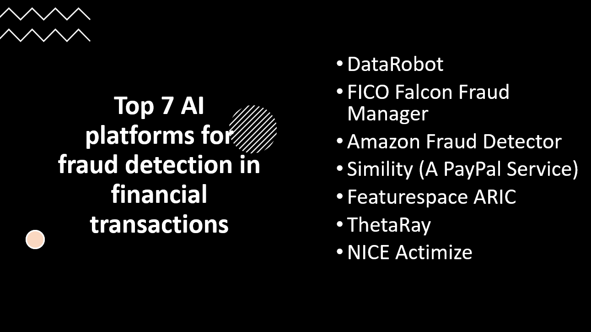

Introduction
Fraud detection in financial transactions is a critical task for ensuring the security and trustworthiness of digital payment systems and financial services. Artificial Intelligence (AI) platforms equipped with advanced machine learning algorithms can effectively identify fraudulent activities and safeguard businesses and customers from potential risks. In this blog post, we will explore the top seven AI platforms for fraud detection in financial transactions, empowering organizations to enhance their fraud prevention strategies and protect their assets.
- AI algorithms can analyze vast amounts of transaction data and patterns, detecting fraudulent activities with high precision and accuracy.
- AI-powered fraud detection systems can analyze transactions in real-time, enabling immediate identification and prevention of fraudulent activities.
- AI platforms can handle large volumes of financial transactions, making them suitable for banks and financial institutions with high transaction volumes.
- AI systems continuously learn from new data and adapt to emerging fraud patterns, staying up-to-date with evolving fraudulent tactics.
- AI platforms automate the fraud detection process, reducing manual effort and enabling faster response to fraudulent activities, improving overall security and customer trust.
Here Are Our Top 7 AI platforms for fraud detection in financial transactions:
1: DataRobot
Overview and Importance
DataRobot is a leading AI platform for fraud detection in financial transactions. It empowers financial institutions to build and deploy highly accurate and efficient fraud detection models using automated machine learning.
Learn more about DataRobot
Key Features and Capabilities
Automated Machine Learning
- DataRobot automates the end-to-end process of building fraud detection models, from data preparation to model selection and deployment, reducing the time and effort required for model development.
Model Interpretability
- The platform provides insights into the factors driving model predictions, enhancing transparency and facilitating model explainability in the context of fraud detection.
Scalability
- DataRobot is designed to handle large volumes of financial transaction data, enabling financial institutions to process and analyze vast amounts of data efficiently.
2: FICO Falcon Fraud Manager
Overview and Importance
FICO Falcon Fraud Manager is a powerful AI platform specifically designed for fraud detection in financial transactions. It is widely used by financial institutions to mitigate fraud risks, protect customer accounts, and prevent financial losses.
Learn more about FICO Falcon Fraud Manager
Key Features and Capabilities
Real-Time Transaction Monitoring
- FICO Falcon Fraud Manager leverages advanced machine learning algorithms to monitor financial transactions in real-time, allowing for swift identification and response to suspicious activities.
Behavioral Analytics
- The platform employs behavioral analytics to create dynamic profiles of individual customers, enabling it to detect abnormal behavior and potential fraudulent activities.
Adaptive Machine Learning
- FICO Falcon Fraud Manager continuously adapts its models based on the latest transaction data, ensuring high accuracy and effectiveness in detecting evolving fraud patterns.
3: Amazon Fraud Detector
Overview and Importance
Amazon Fraud Detector is an AI-powered platform designed to combat fraud in financial transactions. It utilizes machine learning models and historical transaction data to detect fraudulent activities and prevent unauthorized transactions, ensuring the security and trustworthiness of online payments and financial interactions.
Learn more about Amazon Fraud Detector
Key Features and Capabilities
Customizable Fraud Detection Models
- Amazon Fraud Detector allows users to build and deploy custom machine learning models based on their specific fraud detection requirements, enabling tailored and accurate fraud detection.
Real-Time Scoring
- The platform provides real-time scoring for incoming transactions, allowing businesses to make instant decisions on whether to approve or deny transactions based on the fraud risk score.
Integration with AWS Ecosystem
- Amazon Fraud Detector seamlessly integrates with other AWS services, enabling easy access to data storage, data processing, and cloud infrastructure, streamlining the entire fraud detection workflow.
4: Simility (A PayPal Service)
Overview and Importance
Simility is an AI platform specializing in fraud detection for financial transactions. Acquired by PayPal, it offers a comprehensive suite of tools and capabilities to identify and prevent fraudulent activities in real-time. The platform's advanced machine learning algorithms and behavioral analytics help businesses minimize risks, protect their customers, and maintain the integrity of their financial operations.
Learn more about Simility
Key Features and Capabilities
Advanced Machine Learning Models
- Simility leverages sophisticated machine learning models to analyze transaction data and detect patterns indicative of fraudulent behavior, enabling accurate and timely fraud detection.
Real-Time Decisioning
- The platform provides real-time decisioning capabilities, allowing businesses to instantly approve or decline transactions based on the assessment of fraud risk.
Customizable Rules Engine
- Simility offers a customizable rules engine that empowers organizations to define specific fraud detection rules tailored to their unique requirements and risk tolerance levels.
5: Featurespace ARIC
Overview and Importance
Featurespace ARIC is an AI platform designed for fraud detection in financial transactions. It utilizes adaptive behavioral analytics and machine learning to identify anomalies and suspicious activities in real-time. By continuously learning from new data, ARIC can adapt to evolving fraud patterns and provide accurate risk assessments, making it a critical tool for safeguarding financial institutions and their customers against fraudulent transactions.
Learn more about Featurespace ARIC
Key Features and Capabilities
Adaptive Behavioral Analytics
- ARIC employs adaptive behavioral analytics to understand individual customer behavior and detect anomalies that deviate from normal patterns, allowing for precise fraud detection.
Real-Time Scoring
- The platform provides real-time scoring of transactions, enabling instant decision-making to approve, decline, or investigate suspicious activities.
Explainable AI
- ARIC utilizes explainable AI techniques, allowing fraud analysts and investigators to understand the reasoning behind the system's decisions and take appropriate actions.
6: ThetaRay
Overview and Importance
ThetaRay is an AI platform specialized in fraud detection in financial transactions. Using advanced machine learning algorithms and big data analytics, ThetaRay can identify complex patterns and anomalies indicative of fraudulent behavior. Its real-time detection capabilities and ability to process massive amounts of data make it a crucial tool for financial institutions seeking to enhance security and protect their customers from financial crimes.
Learn more about ThetaRay
Key Features and Capabilities
Unsupervised Machine Learning
- ThetaRay employs unsupervised machine learning techniques to detect previously unknown fraud patterns without the need for labeled training data.
Multi-Domain Analysis
- The platform conducts cross-domain analysis, combining data from various sources to identify hidden connections and detect sophisticated fraud schemes that may span multiple accounts or entities.
Rapid Investigation
- ThetaRay provides actionable insights and alerts to fraud analysts, enabling them to conduct rapid investigations and take preventive actions against potential fraudulent activities.
7: NICE Actimize
Overview and Importance
NICE Actimize is a leading AI platform for fraud detection in financial transactions. Leveraging advanced analytics, artificial intelligence, and machine learning, NICE Actimize helps financial institutions proactively identify and prevent fraudulent activities, ensuring a secure and trustworthy environment for their customers. Its comprehensive and adaptive fraud prevention solutions make it a critical tool in the fight against financial crimes.
Learn more about NICE Actimize
Key Features and Capabilities
Behavior Analytics
- NICE Actimize uses behavior-based analytics to detect anomalies and suspicious patterns in real-time, enabling early identification of potential fraud.
Integrated Data Sources
- The platform integrates data from multiple sources, including transactional data, customer information, and external data feeds, to provide a holistic view of the customer and transaction history.
Regulatory Compliance
- NICE Actimize helps organizations adhere to regulatory requirements by offering comprehensive monitoring and reporting capabilities, assisting in meeting compliance standards in the financial industry.
Conclusion
AI platforms like DataRobot, FICO Falcon Fraud Manager, Amazon Fraud Detector, Simility, Featurespace ARIC, ThetaRay, and NICE Actimize are vital for detecting fraud in financial transactions, providing advanced capabilities to safeguard financial systems effectively. Continuous monitoring and improvement of fraud detection models are essential to stay ahead of evolving fraud tactics. By leveraging these AI platforms, businesses can enhance their fraud detection capabilities, protect assets, and ensure the integrity of financial systems, building and maintaining trust with customers and stakeholders.